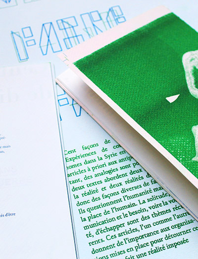
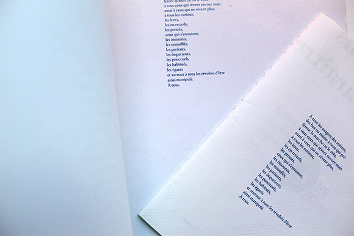

mafalda moreaud
design graphique
Comment faire face?
Workshop avec le collectif Formes Vives
1 Format ouvert—A2 / 1 Format ouvert—A5
Imprimé en risographie sur papier recyclé
Toulouse— Avril 2017
Projet réalisé au cours d’un workshop avec Adrien Zammit du collectif « Formes Vives »et en collaboration
avec Clémence Estingoy. Le questionnement central du projet était de (re) penser la diffusion d’articles
du site d’informations Lundi-Matin. Comment rendre accessible un contenu numérique? Penser d’autres
contextes de lecture. Apporter du sens par la forme. Nous avons fait le choix de rapprocher deux articles
dont « Cent façons de disparaitre » qui traite de manière poétique le thème de l’hyperconnectivité
et l’impossibilité d’y échapper ainsi qu’ « Expériences de communes autonomes dans la Syrie en guerre »
autour d’une édition facilement transportable. L’édition aborde deux rapports à la réalité différents,
et donc des façons diverses de faire face. Ils questionnent l’humanité mais aussi la place de l’humain.
La solitude, la pression de la société, la communication et le besoin, voire la volonté, d’échapper
sont des thèmes récurrents. Ces articles, l’un comme l’autre, donnent de l’importance aux organisations
mises en place pour détourner ce qui est en fait une réalité imposée. Le message est diffusée de manière
plus légère et non moralisatrice afin de le rendre accessible à une cible plus large. A priori ces deux écrits
n’ont rien à voir et nous les avons mis en relation grâce à la composition éditoriale. Nous avons travaillé
chacune sur un article puis dans un second temps nous sommes intervenues chacune sur la production
de l’autre. La mise en page permet au lecteur de jongler d’un article à l’autre tout en établissant des liens.
Un principe coloré est mis en place afin de différencier les deux articles et nos interventions. Au fil de l’édition
les articles se font écho. Cette mise en page permet une autre interprétation de ces articles.
avec Clémence Estingoy. Le questionnement central du projet était de (re) penser la diffusion d’articles
du site d’informations Lundi-Matin. Comment rendre accessible un contenu numérique? Penser d’autres
contextes de lecture. Apporter du sens par la forme. Nous avons fait le choix de rapprocher deux articles
dont « Cent façons de disparaitre » qui traite de manière poétique le thème de l’hyperconnectivité
et l’impossibilité d’y échapper ainsi qu’ « Expériences de communes autonomes dans la Syrie en guerre »
autour d’une édition facilement transportable. L’édition aborde deux rapports à la réalité différents,
et donc des façons diverses de faire face. Ils questionnent l’humanité mais aussi la place de l’humain.
La solitude, la pression de la société, la communication et le besoin, voire la volonté, d’échapper
sont des thèmes récurrents. Ces articles, l’un comme l’autre, donnent de l’importance aux organisations
mises en place pour détourner ce qui est en fait une réalité imposée. Le message est diffusée de manière
plus légère et non moralisatrice afin de le rendre accessible à une cible plus large. A priori ces deux écrits
n’ont rien à voir et nous les avons mis en relation grâce à la composition éditoriale. Nous avons travaillé
chacune sur un article puis dans un second temps nous sommes intervenues chacune sur la production
de l’autre. La mise en page permet au lecteur de jongler d’un article à l’autre tout en établissant des liens.
Un principe coloré est mis en place afin de différencier les deux articles et nos interventions. Au fil de l’édition
les articles se font écho. Cette mise en page permet une autre interprétation de ces articles.




